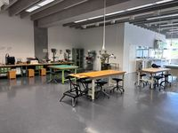

未来大の情報デザインコースでは
ポスターのレイアウトを含む、
情報設計について学んでいます。
情報システム
知覚システム
複雑系
情報デザイン
未来大学には4つのコースがあり、情報デザインは「デザイン」を様々な角度から学びます。
「計画」→「制作」→「評価」→「改善」を繰り返すサイクルを、PDCA（Plan, Do, Check, Action）サイクルと言います。


課題を通して、集めた情報を整理し、"伝わる形"に組み立てていく。それが、このコースで身につける力です。
では具体的に何をしているのか、２年生の制作課題について覗いてみましょう
２年生の制作課題
8/3オープンキャンパスでも、デザコ ブースにて詳しくお話します
座学はここまでです！
演習の準備はできましたか？
もう一度、
ポスターをつくってみよう
同じ3つのブロックを、今度は意識して配置してみよう。
✦ あなたの作品ができた！ ✦
未来大の情報デザインコースでは、
これらを学ぶための環境が整っています
Figma
Illustrator
Photoshop
Processing
Arduino

工房
レーザーカッター・3Dプリンタを備える
アトリエ
大型スクリーンと可動家具のラボ
ミュージアム
学生作品を展示する学内ギャラリー
オープン
キャンパス2026
一人より、二人の方がきっと楽しい。

参加を申し込む →
＊ 申し込みは大学公式サイトから（無料）